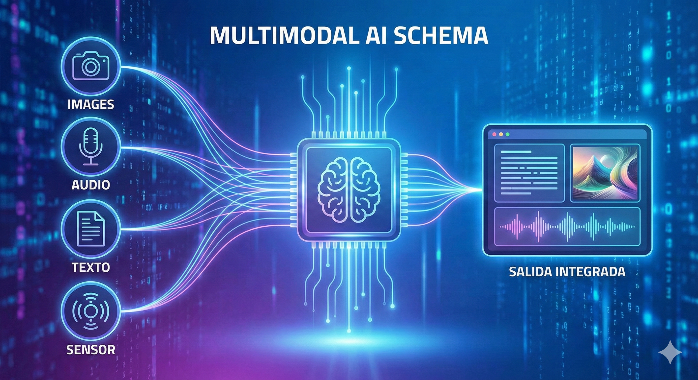

La Revolución de la IA Generativa
Ya no es ciencia ficción. La Inteligencia Artificial ha pasado de ser algo de laboratorios a estar en tu bolsillo. Hoy en día, vivimos la era de la IA Generativa Multimodal.
¿Qué significa Multimodal? Que estas IAs no solo leen texto. Pueden "ver" imágenes, "escuchar" audio y generar respuestas mezclando todo ello. Imagina enseñarle una foto de tu nevera a una IA y que te dé una receta de cocina. ¡Eso es multimodalidad!
Los 3 Gigantes del momento:
El pionero que lo cambió todo. Famoso por su modelo GPT-4o, increíblemente rápido y versátil.
Integrado profundamente con Google. Destaca por procesar ventanas de contexto enormes (¡lee libros enteros!).
Conocido por ser más "humano", seguro y excelente para escribir código y textos creativos.

¿Qué es un Agente Inteligente?
No toda la IA es ChatGPT. En robótica y videojuegos, usamos el concepto de Agente Inteligente. Es cualquier sistema que percibe su entorno y toma acciones para lograr un objetivo.
El Ciclo de Vida del Agente:
-
👀1. Sensores (Percepción) Cámaras, micrófonos, sensores de distancia, teclado... Recogen datos del mundo.
-
🧠2. Procesamiento (La "Caja Negra") El agente decide qué hacer basándose en reglas o aprendizaje.
-
🦾3. Actuadores (Acción) Motores, pantallas, altavoces... Modifican el entorno.
// Ejemplo: Un Aspirador Robot (Roomba)
while (encendido) {
datos = sensor_choque.leer();
if (datos == "CHOQUE") {
girar(90); // Actuador
} else {
avanzar(); // Actuador
}
}
Un agente simple basado en reglas (Reflejo).
¿Cómo aprenden las máquinas?
A diferencia de la programación tradicional (donde tú escribes las reglas), en el Machine Learning (ML) la máquina descubre las reglas por sí misma analizando datos.
1. Aprendizaje Supervisado (Casos Prácticos)
Es como aprender con un profesor. Le damos a la IA miles de ejemplos con la respuesta correcta ("Etiquetas").
- Filtro de SPAM: Le enseñamos 10.000 correos basura y 10.000 buenos. Aprende a diferenciarlos.
- Reconocimiento Facial: Le enseñamos fotos etiquetadas como "Gato" o "Perro".
- Predicción del tiempo: Basado en datos históricos de temperatura y presión.
2. Aprendizaje por Refuerzo (RL)
Es como entrenar a un perro con galletas. La IA prueba cosas al azar; si lo hace bien, recibe un "premio" (puntos positivos). Si falla, recibe un castigo.
- Videojuegos: Una IA aprende a jugar a Mario Bros probando botones hasta que avanza (premio) o muere (castigo).
- Robótica: Un robot aprende a caminar cayéndose miles de veces en una simulación.
- AlphaGo: La IA que venció al campeón mundial de Go jugando contra sí misma.
El Lado Oscuro: Un gran poder conlleva...
La IA es una herramienta poderosa, pero su mal uso puede tener consecuencias graves en la sociedad. Como desarrolladores y usuarios, debemos ser críticos.
Deepfakes
Vídeos o audios falsos hiperrealistas que suplantan la identidad de alguien. Se usan para fraudes, bullying o desinformación política.
Consecuencia: Pérdida de confianza en lo que vemos.
Sesgo Algorítmico
Si entrenamos una IA con datos racistas o machistas, la IA será racista o machista.
Consecuencia: Discriminación automática en contratación de empleos o préstamos.
Alucinaciones
Las IAs generativas a veces inventan datos con total seguridad. No "saben" la verdad, solo predicen palabras.
Consecuencia: Desinformación y errores en trabajos escolares.
🚀 Actividades Evaluables
Para superar el criterio de evaluación 4.2, deberás demostrar que comprendes cómo funcionan estos agentes y aplicarlos para resolver problemas.
Actividad 1: "Prompt Engineer" Junior
Imagina que eres un agente inteligente de ayuda al estudio. Tienes que diseñar una solución usando una IA (Gemini, ChatGPT o Claude) para explicar un concepto complejo a un niño de 5 años.
Instrucciones:
- Elige un tema complejo (ej. Agujeros Negros, Fotosíntesis, Cómo funciona Internet).
- Diseña un Prompt (instrucción) estructurado que incluya:
- Rol: ("Actúa como un profesor experto...")
- Contexto: ("Explícalo para un niño de 5 años...")
- Formato: ("Usa una analogía con comida y emojis...")
- Ejecuta el prompt en una IA y captura la salida.
- Análisis (Lo más importante): Explica qué tipo de aprendizaje crees que usó el modelo para generar esa respuesta (Supervisado con texto de internet) y si detectas alguna "alucinación" o error.
Actividad 2: Diseña tu Agente Inteligente
Vas a diseñar (en papel o documento digital) el funcionamiento lógico de un NPC (personaje no jugador) para un videojuego de sigilo.
Debes definir:
- Objetivo: (Ej. Patrullar el pasillo y atrapar al intruso).
- Sensores: ¿Qué "ve" o "escucha"? (Ej. Cono de visión, sensor de ruido de pasos).
- Actuadores: ¿Qué puede hacer? (Ej. Correr, disparar, activar alarma).
- Aprendizaje: ¿Cómo mejoraría? Plantea cómo usarías el Aprendizaje por Refuerzo para que el guardia aprenda a no caer en las trampas del jugador. (Pista: Sistema de recompensas).
Criterio de Evaluación 4.2:
"Comprender los principios básicos de funcionamiento de los agentes inteligentes y de las técnicas de aprendizaje automático, con objeto de aplicarlos para la resolución de situaciones mediante la Inteligencia Artificial."
🧠 Test de Conocimientos
¿Estás listo para demostrar lo que sabes sobre Inteligencia Artificial?